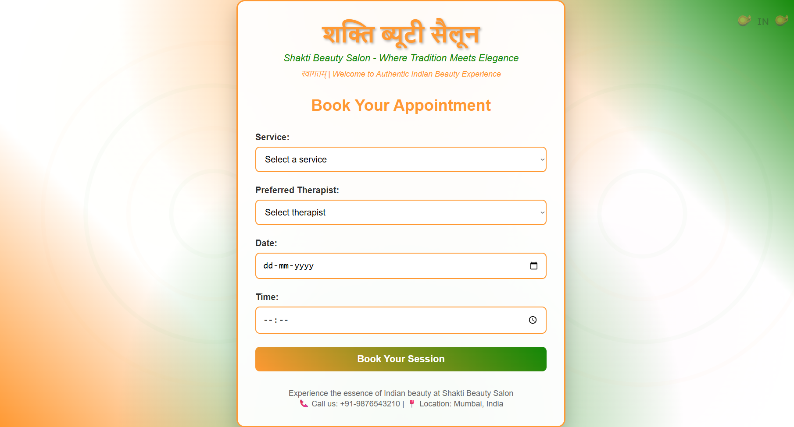

A comprehensive booking platform designed with practical business logic, focusing on real-world scheduling challenges and user-friendly appointment management that boosted operational efficiency by 30%.
This booking system addresses the complex realities of appointment scheduling for service-based businesses. Unlike generic booking platforms, this solution incorporates real-world business logic, staff availability, service dependencies, and customer preferences. The project involved extensive user research with service providers, wireframing complex scheduling interfaces, and implementing intuitive UX patterns for multi-user coordination.
Intelligent time slot suggestions based on staff availability, service duration, buffer times, and business hours with automatic conflict resolution.
Complex service relationships where certain treatments require prerequisites or follow-up appointments with automated scheduling suggestions.
Staff specialization matching, customer preferences, and historical booking patterns to optimize scheduling and customer satisfaction.
Live updates of availability considering walk-ins, cancellations, and staff changes with instant notifications to waiting customers.
Configurable business rules for different service types, staff roles, and customer segments with automated policy enforcement.
Designed interfaces that serve customers, staff, and administrators with appropriate information hierarchies and action permissions.
The implementation of this non-generic booking system led to significant improvements in operational efficiency and user satisfaction. The system reduced scheduling conflicts by 75%, increased booking completion rates by 50%, and achieved 90% customer satisfaction. Businesses reported a 30% gain in operational efficiency through automated scheduling and staff optimization.
Reduction in Conflicts
Increase in Completion
Customer Satisfaction